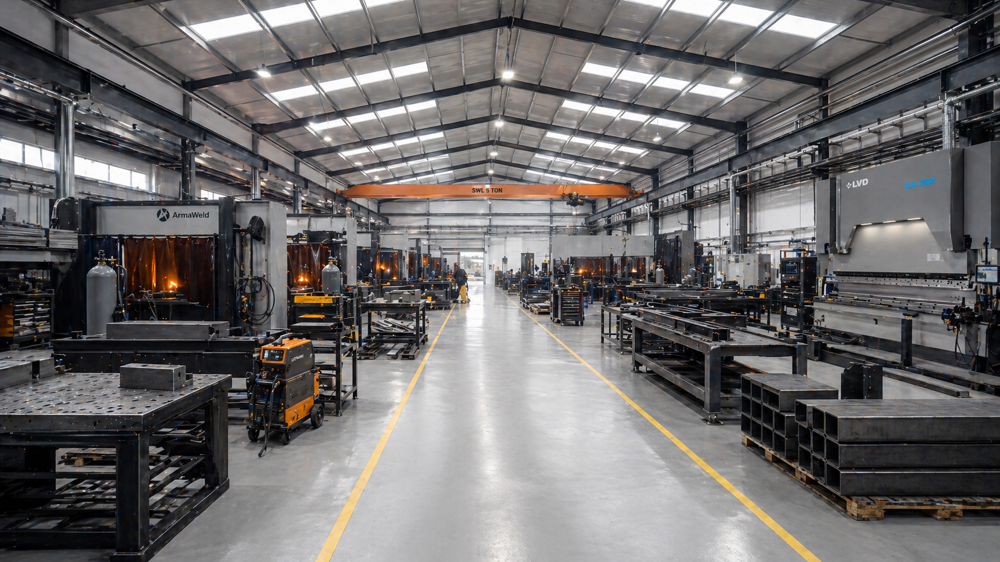
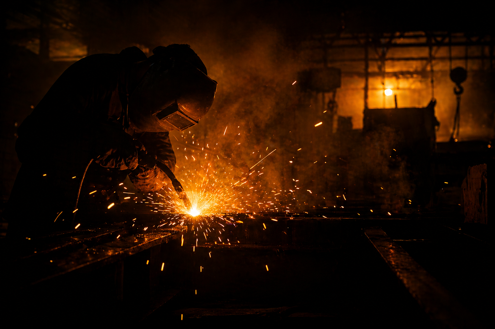

ArmaWeld, makine ve kaynak mühendislerinin kurduğu bir metal işleme atölyesidir. Kaynaklı imalattan yola çıkıp kesim, büküm ve mekanik montajı tek çatı altında birleştiriyor; her parçayı belgelendirilmiş bir mühendislik çıktısı olarak teslim ediyoruz.

● ArmaWeld Üretim AtölyesiMetal işleme, gözle görülmese bile matematik ve fizikle işleyen bir bilimdir. Bir dikişin mukavemeti; doğru akımın, doğru gazın, doğru ön ısıtmanın ve doğru elin birleştiği an ortaya çıkar.
Pek çok atölye yalnızca ürünü teslim eder. Biz aynı anda ürünün kendisini, üretim geçmişini ve kalite kayıtlarını teslim ediyoruz.
Çünkü inandığımız tek bir şey var: Kritik bir parçanın yarın sahada güvenli çalışacağına dair tek teminat, bugün arkasında bıraktığımız belgelerdir.

● Mühendislik DisipliniTEAM — MULTI-DISCIPLINE
ArmaWeld'in arkasında, sektörde uzun yıllardır kalite yönetimi ve üretim süreçlerine hâkim makine mühendisleri, uluslararası yetkinlikte kaynak mühendisleri ve EN ISO 9712 sertifikalı NDT uzmanlarından oluşan bir ekip var. Her disiplin kendi kulvarında derinleşmiş; birlikte çalışarak bir parçayı hammaddeden teslim raporuna kadar belgelendirerek çıkarıyorlar.
IWE / IWT düzeyinde eğitimli, EN ISO 3834-2 kalite sisteminin her adımını yöneten mühendis kadromuz; WPS geliştirme, WPQR onay süreçleri ve kaynakçı nitelendirme matrisini bizzat yürütür. Her dikişin arkasında bir mühendis imzası vardır.
Uzun yıllar üretim hatlarında tecrübe edinmiş makine mühendislerimiz; mekanik tasarım, sonlu elemanlar analizi (FEA) ve üretim planlamasından sorumludur. DWG'den son ürüne kadar imalat hattının omurgasını kurarlar.
VT, PT, MT ve UT yöntemlerinde Seviye 2 sertifikalı muayene kadromuz her işin muayene planını hazırlar ve raporları onaylar. Kabul kriterleri EN ISO 5817 B sınıfı baz alınır; hiçbir dikiş kayıt dışı sahaya çıkmaz.
PRNC — 001 / 004
Her parçanın hammaddesi, kaynakçısı, WPS'i ve NDT kaydı birbirine bağlıdır. Seri numarası olmayan parça üretmeyiz.
Her iş emri mühendis onayından geçer. Sorun çıkan yerde, kaynak maskesini takıp ark başında durabilen mühendislerimiz karar verir.
Sertifikasız kaynakçı, onaysız WPS, raporlanmamış NDT — bizim için kabul edilemez. Kağıt, çelik kadar ciddidir.
Uygunsuzluk, sorumsuzluk değil — öğrenme fırsatıdır. CAPA sistemimizle her uygunsuzluk kök neden analizi ile kapatılır.
FAC — LAYOUT.01
Atölyemiz; malzeme akışı, kaynak istasyonları, NDT kabini ve sevkiyat bölgesi sırasıyla tek yönlü olarak tasarlanmıştır. Bu, her işin "geri dönüş"süz bir hat içinde ilerlemesini ve izlenebilirliği fiziksel olarak desteklemesini sağlar.